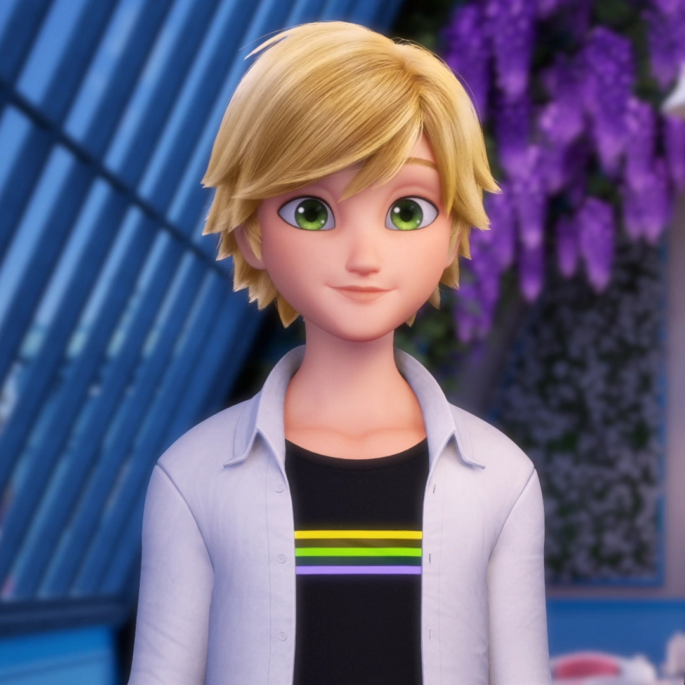

especie: humano.
cabello: Rubio
color de ojos: verdes
color de piel: apiñonado
cumpleaños: 2 de septiembre del 2202.
edad: 14 años.
estatura: 1.50m.
peso: desconocido.
¿neuro divergencia?: Probablemente no.
gustos: Libertad, anime, rock, gaming, salchichas con puré de papas, navidad, maracuyá, perros, chouquettes, escuchar música clásica mientras estudia, hámsters, arquitectura, novelas clásicas, física, los héroes.
disgustos: enfermedad, mala educación, hotcakes con plátano, salchichas, secretos, inutilidad, mentiras, separación, acoso, imposición, modelaje, navidad (2214-2215), autografriar, camembert, bullying, desdén, rechazo, culpa, confusión, falsedad.
habilidades: Interpretación, esgrima, políglota, telegrafía, pianismo, canto, danza.
Familia: Gabriel Agreste (padre), Emily Agreste (madre fallecida), Kirai Kojin Kodoku Loredo (primo/hermano mayor adoptivo), Amélie Graham (tía materna), Manda Charlie Kodoku (tía materna fallecida), Kojin Kodoku (tío politico fallecido), Félix Fathom (primo), Vel Fathom (prima), Marinette Dupain-Cheng (novia)
"Kirai, ¿es cierto eso qué dices de que hay algo que nos ve como si fueramos personajes de una historia? eso no te lo creo, aunque hayas viajado por las esferas negras que empezaron a aparecer un día, eso suena muy fantacioso"
enfermedades mentales: posible depresión
